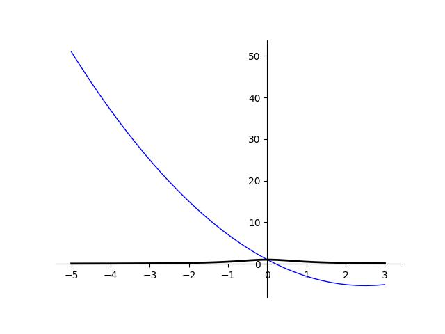

f(x) = x2 - 5x + 1
| x | f(x) | y(x) | z(x) |
|---|---|---|---|
| -5.0 | 51.0 | 51.0 | 0.038 |
| -4.771 | 47.624 | 47.624 | 0.042 |
| -4.543 | 44.352 | 44.352 | 0.046 |
| -4.314 | 41.184 | 41.184 | 0.051 |
| -4.086 | 38.122 | 38.122 | 0.057 |
| -3.857 | 35.163 | 35.163 | 0.063 |
| -3.629 | 32.309 | 32.309 | 0.071 |
| -3.4 | 29.56 | 29.56 | 0.08 |
| -3.171 | 26.915 | 26.915 | 0.09 |
| -2.943 | 24.375 | 24.375 | 0.104 |
| -2.714 | 21.939 | 21.939 | 0.12 |
| -2.486 | 19.607 | 19.607 | 0.139 |
| -2.257 | 17.38 | 17.38 | 0.164 |
| -2.029 | 15.258 | 15.258 | 0.195 |
| -1.8 | 13.24 | 13.24 | 0.236 |
| -1.571 | 11.327 | 11.327 | 0.288 |
| -1.343 | 9.518 | 9.518 | 0.357 |
| -1.114 | 7.813 | 7.813 | 0.446 |
| -0.886 | 6.213 | 6.213 | 0.56 |
| -0.657 | 4.718 | 4.718 | 0.698 |
| -0.429 | 3.327 | 3.327 | 0.845 |
| -0.2 | 2.04 | 2.04 | 0.962 |
| 0.029 | 0.858 | 0.858 | 0.999 |
| 0.257 | -0.22 | -0.22 | 0.938 |
| 0.486 | -1.193 | -1.193 | 0.809 |
| 0.714 | -2.061 | -2.061 | 0.662 |
| 0.943 | -2.825 | -2.825 | 0.529 |
| 1.171 | -3.485 | -3.485 | 0.422 |
| 1.4 | -4.04 | -4.04 | 0.338 |
| 1.629 | -4.491 | -4.491 | 0.274 |
| 1.857 | -4.837 | -4.837 | 0.225 |
| 2.086 | -5.078 | -5.078 | 0.187 |
| 2.314 | -5.216 | -5.216 | 0.157 |
| 2.543 | -5.248 | -5.248 | 0.134 |
| 2.771 | -5.176 | -5.176 | 0.115 |
| 3.0 | -5.0 | -5.0 | 0.1 |
